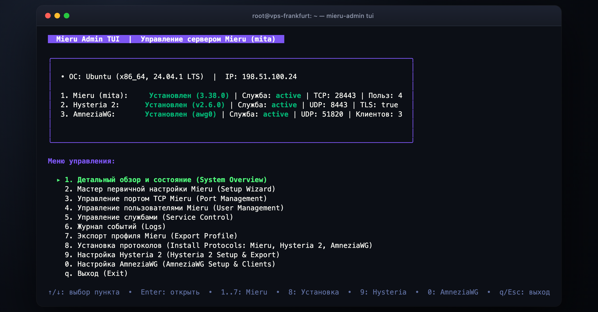
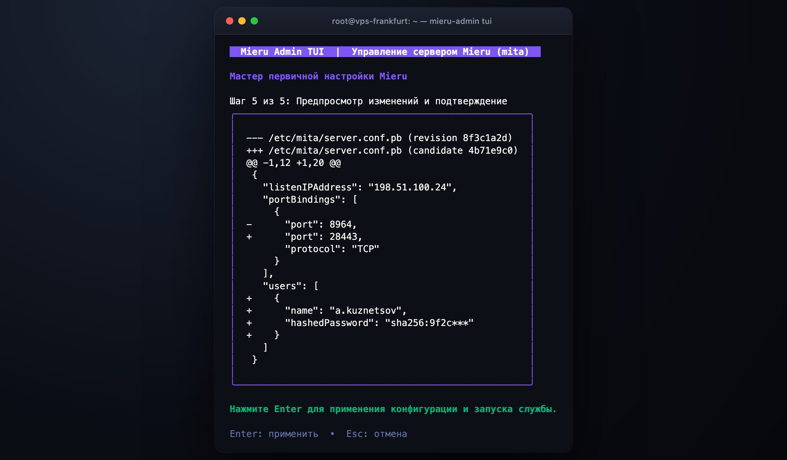

Приватный туннель для свободного интернета
AvariGate объединяет протоколы Mieru, Hysteria 2 и AmneziaWG в едином приложении для обхода блокировок. Умный failover, раздельное туннелирование и нулевые привилегии интерфейса.


Триада протоколов для обхода цензуры
Обычные VPN-протоколы блокируются по сигнатурам и эвристикам. AvariGate объединяет три независимых решения, специально разработанных для работы в сетях с глубоким анализом пакетов (ТСПУ, GFW).
Мультиплексированный туннель с маскировкой трафика под случайный шум и защитой от активного зондирования со стороны DPI-систем.
- Анти-сканирование: не отвечает на проверочные запросы цензора
- Мультиплексирование потоков внутри одного TCP-соединения
- Двойная изоляция паролей mita sha256 + 0x00 salt
Быстрый протокол поверх модифицированного UDP/QUIC с обфускацией Salamander. Обеспечивает высокую скорость даже при ощутимых потерях пакетов.
- Обфускация Salamander: трафик неотличим от произвольного UDP
- Маскировка SNI и самоподписанные сертификаты ECDSA
- Компенсация потерь: Brutal Congestion Control при нестабильной сети
Продвинутая обфускация WireGuard v3.1. Защищает заголовки пакетов при рукопожатии и передаче данных, исключая детектирование по стандартным сигнатурам.
- Рандомизация заголовков: параметры Jc, Jmin/Jmax, S1–S4
- Хеширование инициализации H1–H4 и I1–I5
- Поддержка стандартных WireGuard .conf файлов без правок
Создан для непрерывной связи и строгой изоляции
Каждый уровень клиента и сервера спроектирован с упором на стабильность соединения и нулевое доверие к привилегиям графического интерфейса.
Интеллектуальный Failover
При сбое ноды клиент выполняет до 3 циклов проверки резервных профилей с паузами 15 секунд и подключается к первому доступному серверу.
Раздельное туннелирование
Режимы Include и Exclude. Маршрутизация по маскам доменов (*.ru, gosuslugi.ru) и CIDR-подсетям. Встроенный переключатель Bypass LAN для домашней сети.
Per-App Split (Android)
На мобильных устройствах выбирайте приложения вручную: локальные сервисы идут напрямую, а мессенджеры и браузер — через защищённый туннель.
Разделение привилегий
Интерфейс работает без прав администратора. Сетевые маршруты и адаптер TUN настраиваются демоном mieru-helper через локальный сокет с правами 0600.
Мгновенный QR-импорт
Серверный TUI генерирует ASCII QR-код прямо в вашем SSH-терминале. Сканируйте его встроенным сканером CameraX + ZXing в Android-клиенте за 1 секунду.
Чистое завершение сессий
Никаких потерь интернет-соединения после закрытия: при отключении клиент корректно останавливает ядро и восстанавливает системные DNS и таблицу маршрутов.
Менеджер mieru-admin: всё в одном бинарнике
Никаких сложных зависимостей и хрупких скриптов. Статический Go-бинарник устанавливает systemd службу, разворачивает стек протоколов и предоставляет интерактивный TUI прямо в SSH-терминале.
curl -fsSL -O https://github.com/OstKost/avari-gate/releases/download/v0.7.0/AvariGate-admin-linux-amd64.tar.gz && tar -xzf AvariGate-admin-linux-amd64.tar.gz && sudo ./mieru-admin setup
5-шаговый мастер с проверкой diff
Мастер настройки валидирует конфиг до применения. На 5-м шаге вы видите точный unified diff. При ошибке службы система автоматически откатывается на предыдущую ревизию.
Экспорт профилей с QR в терминале
Создавайте пользователей Mieru, Hysteria 2 и AmneziaWG в TUI. Конфигурация выводится в формате hy2://, wireguard .conf и в виде чистого ASCII QR прямо в окно терминала.
Вендоринг и проверка SHA-256
Скрипты установки AmneziaWG встроены в бинарник через //go:embed и проверяются по криптографическому SHA-256 хэшу перед запуском, устраняя сетевые риски.
Дашборд состояния и REST API
Мониторинг портов и служб в реальном времени. Встроенный loopback REST API (доступен только локально через Bearer-токен) позволяет автоматизировать управление нодой.

Авторские темы оформления интерфейса
Интерфейс приложения адаптируется под ваше настроение. Переключайте визуальные стили одним кликом: тема меняет эстетику, сохраняя настройки и профили в полной безопасности.
AvariGate
Кибер-сфера частиц & глубокий космосКлассическое оформление AvariGate: тёмная космическая палитра, неоновые бирюзовые акценты и анимированная центральная сфера состояния с визуализацией активности трафика.
Скачать AvariGate для ваших устройств
Официальные публичные релизы из репозитория OstKost/avari-gate. Каждая сборка проверена контрольными суммами SHA-256.
Клиентские приложения
Полнофункциональные графические клиенты для персональных устройств
AvariGate macOS
macOS 12+ (M1 / M2 / M3 / M4)AvariGate_0.7.0_aarch64.dmg
~27.5 МБ
AvariGate Android
Android 8+ (arm64-v8a & x86_64)Сборка в GitHub Releases
~148.5 МБ
Пакеты Linux GUI
Ubuntu, Debian (.deb) & Arch (.pkg.tar.zst).deb / .pkg.tar.zst
~15–19 МБ
Серверный стек
Статический бинарник для развёртывания узлов Mieru, Hysteria 2 и AmneziaWG
mieru-admin Server
Ubuntu 24.04 / Debian 13 (x86_64)AvariGate-admin-linux-amd64.tar.gz
~5.7 МБ
tar -xzf AvariGate-admin-linux-amd64.tar.gz && sudo ./mieru-admin setup
Автоматически настроит systemd, валидирует порты и выведет QR-код для моментального импорта в клиент.
Честный статус платформ и архитектур:
- macOS Apple Silicon (M1/M2/M3/M4): Готово Релизные .DMG с ad-hoc подписью и launchd-демоном.
- Android 8+ (ARM64 & x86_64): Готово Подтверждено туннелирование TCP Mieru и WireGuard/AWG.
- Linux Server (Ubuntu / Debian x86_64): Готово Принят под systemd, безопасный вендоринг AWG.
- Windows Desktop (10/11): В разработке Служба AvariGateHelper, очистка DNS и автопереключение реализованы; сетевая приёмка и сборка в процессе.
- iOS: В планах Архитектурный план NetworkExtension подготовлен, реализация запланирована после Windows.
c3f20f406901776948746f78bb794e0cae84d4f5749288fed307243ca8b0b04a AvariGate_0.7.0_aarch64.dmg 7dec3b4d49fc5c83b79892c05f7994d5109359a8f20c19f0d08c24a46048a864 EyeVPN_0.7.0_aarch64.dmg 94173b2eeb221ceda9fbc7291e56f6a0db75b8806b0a9c8822d46b445910fa9e AvariGate-0.7.0-android-debug.apk f109de5d6b1922fe7eea1c84fafb32898ebbe2555e43a57febaba9bd75278553 EyeVPN-0.7.0-android-debug.apk 157f8940cd362865c48c5cd67ac6ce28d94eb2e003889ddd3a46fc64a74884bb AvariGate-admin-linux-amd64.tar.gz
Хронология реальных релизов проекта
Каждая строчка подкреплена исходным кодом, unit-тестами и сетевыми проверками в репозитории.
v0.7.0 — Безопасность TLS, Hysteria и обновлённый лендинг
20 ноября 2026- Безопасность: явное согласие на небезопасный TLS, безопасный экспорт Hysteria только с доверенным сертификатом и явным именем сервера, усиленная проверка загрузок и установщиков.
- Клиенты: улучшения desktop и Android, обновлённый интерфейс и подготовка к раздельному туннелированию; Android по-прежнему debug-сборка для arm64-v8a и x86_64.
- Лендинг: новый дизайн, живая сфера состояния и проверенные скриншоты интерфейса.
- Платформы: macOS — ad-hoc подпись без нотарификации; Windows перенесена в следующий релиз.
v0.6.0 — Полиморфные профили, модульный UI и вендоринг AWG
19 ноября 2026-
Полиморфный Profile: Tagged Union
ProtocolDataв Rust иsealed interface ProtocolConfigв Kotlin с полной обратной совместимостью старых JSON-профилей. -
Модульная декомпозиция UI: главный файл desktop
main.tsсокращён до компактного модуля, экран AndroidMainScreen.ktразделён на изолированные компоненты. - Устранение supply-chain риска: скрипт установки AmneziaWG завендорен локально в Go-бинарник и проверяется по SHA-256 перед запуском с root правами.
-
Декомпозиция Server TUI: мастер первичной настройки и управление пользователями вынесены в отдельные модули
wizard.goиusers_view.go.
Принцип нулевого доверия к интерфейсу
Вредоносный код или компрометация UI не могут захватить систему: сетевые адаптеры изолированы в отдельном системном сервисе.
Графический интерфейс
Tauri v2 (Rust + Vite) или Jetpack Compose (Android)
Системный демон (Helper)
launchd (macOS) / Polkit (Linux) / VpnService (Android)
Ядро enfein/mbox 1.14.3
Mieru 3.38 + Hysteria 2 + AmneziaWG 3.1 + TUN
Часто задаваемые вопросы
Всё, что вам нужно знать перед установкой AvariGate.
Стандартные протоколы OpenVPN и базовый WireGuard имеют фиксированные сигнатуры рукопожатия, которые мгновенно распознаются DPI-системами (ТСПУ, GFW) и блокируются. Mieru маскирует трафик под случайный шум и не отвечает на активные зонды цензора, Hysteria 2 использует модифицированный QUIC Salamander с компенсацией потерь, а AmneziaWG рандомизирует заголовки (Jc, S1–S4, H1–H4), делая пакеты неотличимыми от произвольного шифрованного трафика.
В клиенте AvariGate встроены темы оформления: AvariGate (фирменная кибер-космическая тема с неоновой бирюзовой сферой частиц), DragonGate (императорский изумрудный нефрит с золотым драконом), CorsairGate и KawaiiGate. Вы можете переключать их в любой момент в настройках приложения без перезапуска соединения.
Нет. Приложение и сервер не содержат телеметрии, трекеров и аналитики. Исходный код открыт на GitHub в публичном репозитории OstKost/avari-gate, где вы можете самостоятельно убедиться в чистоте кода.
Операционные системы не позволяют непривилегированным программам создавать виртуальные сетевые адаптеры (TUN) и менять системные маршруты. Для этого AvariGate один раз устанавливает легковесный системный демон mieru-helper в launchd через стандартный диалог macOS. Сам GUI-клиент работает от обычного пользователя и общается с демоном через локальный Unix-сокет.
Да, именно для этого создан mieru-admin! Достаточно арендовать любой виртуальный сервер на Ubuntu 24.04 LTS или Debian 13, скачать архив утилиты и выполнить «sudo ./mieru-admin setup». Пошаговый мастер проведёт вас через настройку за пару минут, проверит diff конфига и покажет QR-код для моментального подключения с телефона или ноутбука.
Для Windows уже написана служба AvariGateHelper, модуль очистки DNS/маршрутов и алгоритм автопереключения; сейчас завершается сборка и стендовые сетевые испытания. Для iOS подготовлен архитектурный план на базе NetworkExtension API. Мы публикуем релизы только после прохождения строгой сетевой приёмки. Следите за обновлениями в GitHub Releases!